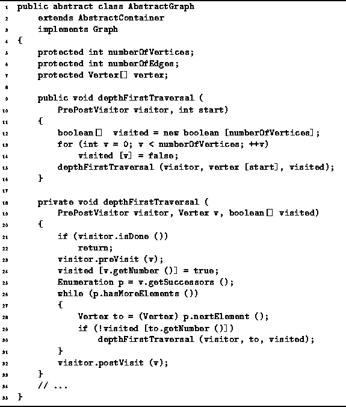
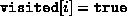
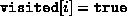

Data Structures and Algorithms
with Object-Oriented Design Patterns in Java
Data Structures and Algorithms
with Object-Oriented Design Patterns in Java
Program  gives the code for the depthFirstTraversal
method of the AbstractGraph class.
In fact, two depthFirstTraversal methods are defined.
One of them accepts two arguments; the other, three.
As indicated in Program ,
the two-argument method is declared public
whereas the three-argument one is private.
gives the code for the depthFirstTraversal
method of the AbstractGraph class.
In fact, two depthFirstTraversal methods are defined.
One of them accepts two arguments; the other, three.
As indicated in Program ,
the two-argument method is declared public
whereas the three-argument one is private.
The user of the Graph interface only sees the two-argument depthFirstTraversal method. This method takes any PrePostVisitor and an integer. The idea is that the visit method of the visitor is called once for each vertex in the graph and the vertices are visited in depth-first traversal order starting from the vertex specified by the integer.

Program: AbstractGraph class depthFirstTraversal method.
In order to ensure that each vertex is visited at most once,
an array of length  of boolean values
called visited is used (line 12).
That is,  only if vertex i has been visited.
All the array elements are initially false (lines 13-14).
After initializing the array,
the two-argument method calls the three-argument one,
passing it the array as the third argument.
of boolean values
called visited is used (line 12).
That is,  only if vertex i has been visited.
All the array elements are initially false (lines 13-14).
After initializing the array,
the two-argument method calls the three-argument one,
passing it the array as the third argument.
The three-argument method returns immediately if the visitor is done. Otherwise, it visits the specified node, and then it follows all the edges emanating from that node and recursively visits the adjacent vertices if those vertices have not already been visited.
 Copyright © 1998 by Bruno R. Preiss, P.Eng. All rights reserved.
Copyright © 1998 by Bruno R. Preiss, P.Eng. All rights reserved.